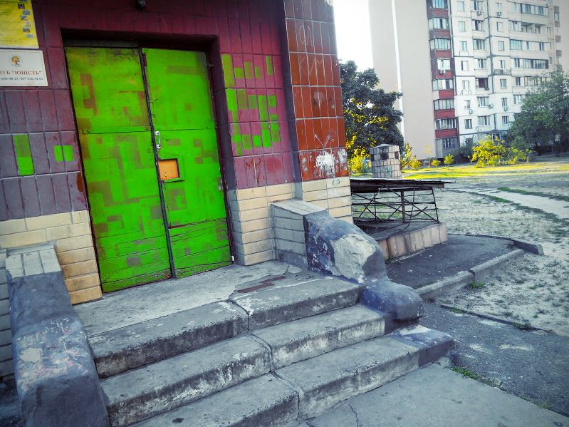

текущий проект
подьезд
367
93
113
Morbi velit tortor, hendrerit nec felis et, pellentesque venenatis tellus. Curabitur cursus libero eu mauris aliquet, in pulvinar nunc suscipit. Mauris non lacus at ante viverra varius id in dolor. Maecenas fringilla feugiat orci gravida iaculis.
Киев, ул. Коломойского, 13 87% собрано
Кот саймона
Вот такой получился красивый подъезд. Всем кошатникам посвящается. Любознательный кот исследует подъезд.
Маквин
Молния Маквин. Э рон дон дон, обладатель кубка Поршня теперь в вашем подъезде!Селфи с чемпионом обязательно!;)

О нас
Вреж Киракосян, художник-портретист: "Мне кажется, с детства рисуют абсолютно все. Но некоторые одарены меньше. Одни просто влюбляются в рисование, другие — нет. Те, кто влюбляется, в последствии и становятся художниками. Если, конечно, проявляют трудолюбие и упорство и если не дают житейским заботам заглушить любовь к творчеству."
НАШИ ХУДОЖНИКИ

ЧЕРВЯКОВ

НЕЙБУРГ
БАТОГОВСКИЙ
ИВАНОВА
ДАСЮК

ГОРОХ
ШАТКОВСКАЯ
РУСАНОВИЧ

ЗАГОРОДНЮК
МИЛЕВА